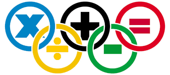
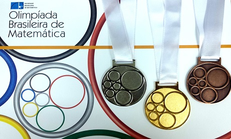
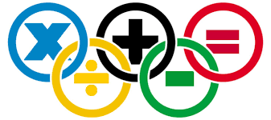
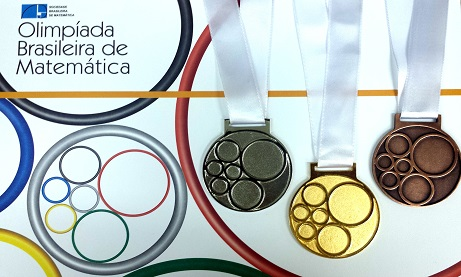
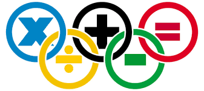
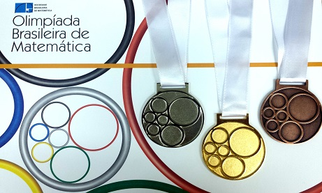

Venha se preparar no Centro de Treinamento Especializado nas Olimpíadas de Matemática de todo Brasil!!!


Tratar com Guilherme Beraldi pelo whats (44)984473305 ou pelo e-mail gebraldimandarino@gmail.com
Eu sou o Professor Guilherme Beraldi, sou formado no curso graduação em Matemática Licenciatura na Universidade Estadual de Maringá - UEM, e há 5 anos que trabalho com enfoque na Matemática Olímpica, estudo de preparação para as provas de Olimpíadas de Matemática de todo o Brasil.
Te convido a participar do curso com foco nas olimpíadas de Matemática de todo o Brasil .... (formato diferente ou grupo de estudos) ....
Para mais informações fale comigo pelos contatos acima na seção INSCRIÇÕES (Emojis) ou acesse os links abaixo: